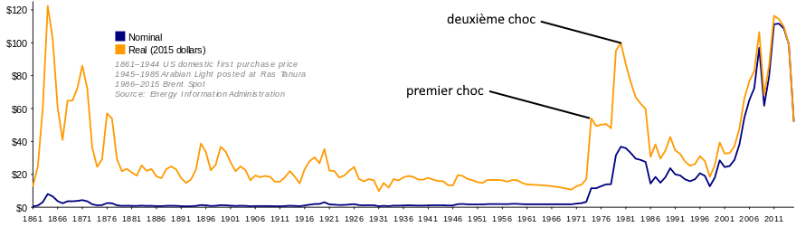

Entre 1970 et 1972 ont lieux les dernière missions humaines vers la Lune allant de la mission Apollo 13 à Apollo 17.
Les chocs pétroliers
Il y a eu deux chocs pétroliers dans les années 70. Le premier a eu lieu entre 1970 et 1973, durant cette crise le prix du pétrole double après la prise de conscience des principaux pays exportateurs. En 1973 à la fin de la guerre du Kippour les pays du Golfe décident d'augmenter les prix du pétrole pour "se venger" des pays alliés à Israël, les vainqueurs de cette guerre. Ce qui fait quadrupler le prix du pétrole, passant de 2,59$ à 11,65$. Cette crise va durer jusqu'en 1978.
Peu de temps après aura lieu le deuxième choc pétrolier. Celui-ci prend principalement sa source en Iran après la révolution iranienne et de la guerre entre l'Iran et l'Irak, la forte demande liée au précédent choc a également aidé à provoquer cette crise. Elle dure de septembre 1978 à 1981, le baril de pétrole atteint le prix record de 40$ en automne 1979. Cette crise est bien plus grave que la première car tous les pays sont touchés et pas seulement les pays industrialisés. Un troisième choc aura lieu plus tard.

Personnages célèbres
Entre 1970 et 1979 de nombreux personnages importants sont nés ou décédés.
Naissances
Voici une liste de quelques célébrités nées dans les années 70 (un par an).
Différents conflits débutent ou se terminent dans les années 70. Comme la guerre de Biafra qui dura de 1967 à 1970 dans laquelle la France s'est impliquée clandestinement en soutenant le Biafra. Une des guerres importantes des années 70 est la guerre du Kipour qui a duré du 7 au 24 octobre 1973, c'est la guerre qui a causé le premier choc pétrolier. Les troupes soviétiques interviennent dans la guerre d'Afghanistan en décembre 1979, une guerre qui durera jusqu'en 1989.
Catastrophes naturelles :
La catastrophe naturelle la plus grave est le Cyclone de Bhola, il a touché le Bangladesh, le Pakistan Oriental et le Bengale-Occidental entre le 12 et 13 novembre 1970. C'est le cyclone le plus meurtrier de l'histoire avec 500 000 victimes, mais ce n'est qu'officieusement car les communiqués officiels estiment qu'il y a eu entre 224 000 et 300 000 morts confirmés. Il a soufflé entre 205 et 180km/h et il a fait envirion 86.4 millions de dollars de dommages (c'est 571 752 000 dollars actuels). La catastrophe qui a causé le plus de dommages est l'ouragan Agnès qui a touché la Floride le 18 et le 19 juin 1972 et qui n'a causé que 129 morts mais a fait l'équivalent de 14 milliards de dollars actuels de dégâts.